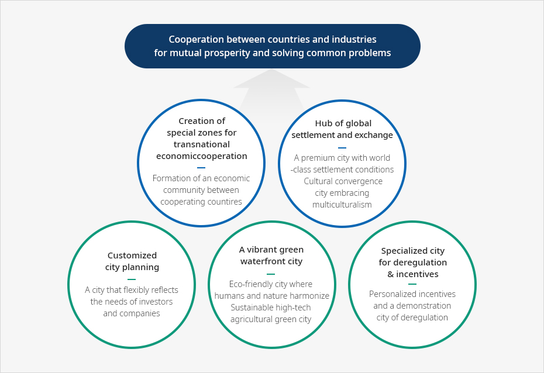
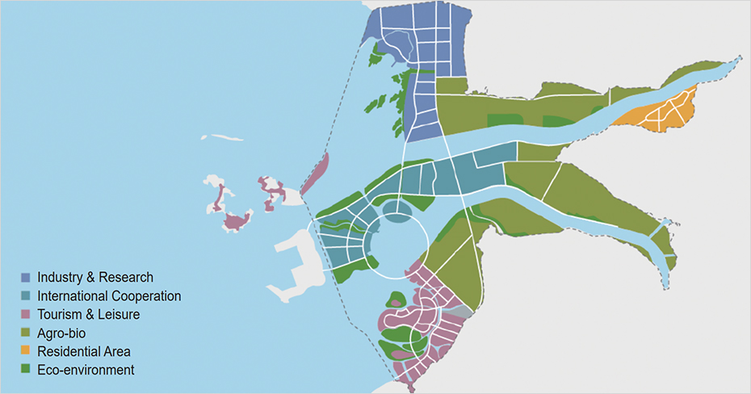

Saemangeum
- Home
- 투자의 시작
- Foreign-invested Company Priority Zones
- Saemangeum
산업입지에는 경제자유구역, 외국인투자지역 및 자유무역지역 등의 외국투자가를 지원하기 위한 지역이 있으며, 입지는 임대 또는 분양의 형태로 지원된다. 이러한 지역은 일정 요건 충족 시 입지지원 뿐만 아니라 조세감면이 적용되며 다른 법령에서 제한되는 사항에 대한 예외가 적용되는 경우도 있다.
- Saemangeum Project Overview
- Saemangeum Project Infrastructure
- Saemangeum National Industrial Complex
- Saemangeum National Industrial Complex Investment Incentives
The Saemangeum Development Project is a national project that builds the world's longest seawall connecting Gunsan and Buan to create reclaimed land thereby building the center for ‘global free trade’ and ‘economic cooperation’, encompassing economy, business, and tourism.
Saemangeum Project Overview
A world-class reclamation project, promising the future of Korea
-
LocationGunsan-si, Gimje-si, Buan-gun, Jeollabuk-do
-
ScaleArea: 409㎢ (Land 291㎢, Lake 118㎢) World's longest seawall: 33.9 km
-
Expenses22.2 trillion won (government expenses 10.9, local expenses 0.9, private investment 10.3) Site creation 10.9, infrastructure 6.6, water quality improvement 2.9, others 1.8 'Investment of 6.5 trillion won by 2018
-
Expected populationWhen the development is completed, the total induced population is 759,000, Plannig to accommodate 290,000 people in the Saemangeum project area


Vision
Saemangeum (Ariul), The city opening up a new civilization


Cooperation between countries and industries for mutual prosperity and solving common problems
- Creation of special zones for transnational economiccooperation Formation of an economic community between cooperating countires
- Hub of global settlement and exchange A premium city with world-class settlement conditions Cultural convergence city embracing multiculturalism
- Customized city planning A city that flexibly reflects the needs of investors and companies
- A vibrant green waterfront city Eco-friendly city where humans and nature harmonize Sustainable high-tech agricultural green city
- Specialized city for deregulation & incentives A city that flexibly reflects the needs of investors and companies

Saemangeum's competitiveness
“The only national project dedicated by central administrative agencies to create an economic hub in Northeast Asia”
-
National-level leading investment and support
- A leading project with decent speed promoted by the public, with full support from the government
- Establishment of Saemangeum Development Corporation, which is in charge of landfill business and infrastructure expansion
-
Designated as the only Korean-Chinese industrial cooperation complex in Korea
- Regularly holding Korea-China industrial cooperation complex cooperation exchange conferences
- Mutual economic development plan and active investment attraction in progress
- Exemption of customs duties when exporting imported raw materials
-
Flexible regulation compared to other special zones in Korea such as Free Economic Zone and Free Trade Zone
- Unlimited storage period for imported goods and various tax benefits
- Providing long-term rental land (50 years + 50 years) to domestic and foreign investment companies
- Significantly simplifies the procedure for issuing a visa (C-3) through a letter of recommendation
-
Construction of a Gunsan-specialized job model for electric vehicles
- After creating the electric car cluster, a total of 177,000 electric cars are expected to be produced by 2022 ‘Investment of KRW 412.2 billion and job creation of 1,902 by 2022’
- Participating companies: 4 medium-sized companies and 5 parts manufacturing companies
- Myungshin, Saemangeum Consortium, Edison Motors, Daechang Motors, and MPS Korea
-
Attraction of Gunsan Small-strong Special R&D Zone
- In the background of Saemangeum Industrial Complex and Gunsan National Industrial Complex, 6 regional research support institutes including Kunsan University and Automobile Convergence Technology Institute are participating to form a special R&D zone
-
Saemangeum New Transportation Special Zone
- A special zone that can test and commercialize the core technologies of the 4th industrial revolution related to land, sea, and air mobility, such as autonomous vehicles, drones, and Wig ships in the Saemangeum region, will be created

Saemangeum Land Use Plan and Major Projects
-
Future car cluster
- Creating a 3.4㎢ future car cluster in Saemangeum Industrial Complex (Agreement with 10 agencies)
- Designated as a special research zone for eco-friendly future vehicles, Building infrastructure such as commercial vehicle driving test bed
-
Renewable energy cluster
- Period : 2018~2025
- Project entity : Saemangeum Development Agency, Saemangeum Development Corporation, Gunsan City
- Business description: Floatingsolar 2.1GW, Groundsolar 0.3GW, Fuel cell 0.1GW, Wind power 0.1GW
-
Eco-friendly smart waterside city
- Business description : Development of a eco-friendly smart waterside city(International business, convention, hotel, resort, art center, residential, etc.)
- Area: 6.6 ㎢ / Project operator: Saemangeum Development Corporation / Project period: 2018~2024
-
Tourism & Leisure Business/Jamboree
- Business site: Gogunsangundo, Shinshiami district, Tourism/leisure districts 1,2
- World Scout Jamboree: Will be held in 2023
- Develop 8.9㎢ for the Jamboree site

